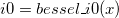

Bessel-i0-func
 evaluates an approximation to the modified Bessel function of the first kind, I0(x).The function is based on Chebyshev expansions.
For more information please review the s17aec function in the NAG document.